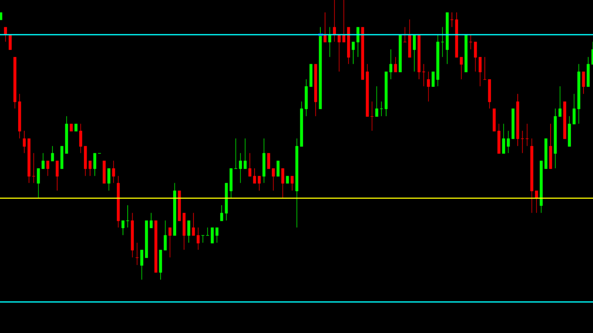
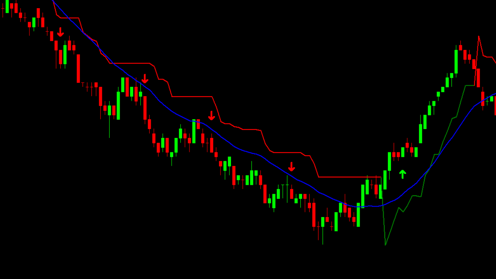

CRÉATION ROBOT SUR MESURE
Le client est le chef d'orchestre de son propre robot. En travaillant en collaboration, nous donnons vie
à la vision de nos clients en concevant des robots sur mesure qui répondent à leurs besoins. De
la conception à la réalisation, chaque étape est guidée par la créativité et la précision, assurant ainsi la
naissance de robots uniques.
Important : Pour la conception d'un robot, contactez-nous via
WhatsApp pour le recueil de vos informations de contact et de toutes les données nécessaires à la réalisation du
projet. Le paiement se fait en deux étapes : un acompte initial de 50% sera requis pour commencer le projet,
suivi du paiement de la somme
restante à la livraison du projet.
ROBOT NIVEAUX

Le robot niveaux se distingue par sa stratégie ingénieuse qui s'appuie sur les niveaux VA (Value Area) et
le VPOC (Point of Control) de la séance précédente. Lorsqu'il repère des opportunités sur ces niveaux
cruciaux, le robot niveaux
entre
en action, exécutant des trades avec précision.
ROBOT CROCHETS
Le robot crochet repose sur une approche technique innovante, s'inspirant des crochets utilisés dans le
market profile. En empruntant cette technique, le robot analyse et interprète les mouvements du marché de
manière précise. Il identifie les niveaux de support et de résistance de chaque 30 minutes, tout en ajustant
dynamiquement sa
stratégie en fonction des crochets observés.
ROBOT MIROIR VWAP
Le robot VWAP excelle grâce à une stratégie focalisée sur la VWAP (Volume-Weighted Average Price). En
utilisant la VWAP comme boussole du marché, le robot identifie les opportunités de trading en fonction de la
relation entre les prix actuels et la VWAP. Dès qu'il repère des écarts significatifs, le robot entre en
action, prenant une position réfléchies basées sur la dynamique de la VWAP.
ROBOT SUPERTREND

Le robot Supertrend se distingue par une stratégie sophistiquée combinant une moyenne
mobile et le Supertrend. Dès le début de la séance, le robot analyse de manière précise les mouvements du
marché, en mettant particulièrement l'accent sur les signaux générés par la moyenne mobile et le Supertrend.
Lorsqu'il repère des variations significatives par rapport à ces indicateurs, le robot Supertrend entre en
action, prenant des positions stratégiques.
ROBOT IB
Le robot IB mis au point excelle grâce à une stratégie affinée ciblée sur l'IB (Initial Balance) du
jour. Dès le début de la séance, le robot analyse avec précision les niveaux clés de l'IB, identifiant ainsi
des opportunités de trading basées sur la configuration initiale du marché. Lorsqu'il détecte des mouvements
significatifs par rapport à l'IB, le robot IB entre en action, prenant des positions judicieuses.
C'EST QUOI UN ROBOT TRADING ?
Un robot de trading, également connu sous le nom de système de trading automatisé, est un
logiciel informatique programmé pour analyser les marchés financiers, prendre des décisions d'achat ou de vente
d'actifs et exécuter ces transactions de manière automatisée.
Ces robots utilisent des algorithmes prédéfinis et des règles spécifiques pour effectuer des opérations sur les
marchés financiers.
POURQUOI UTILISER UN ROBOT DE TRADING ?
Automatisation des Opérations : Les robots de trading automatisent l'exécution des ordres
d'achat et de vente,
ce qui permet d'éliminer la nécessité d'une surveillance constante des marchés.
Réactivité et Rapidité : Les robots peuvent réagir rapidement aux changements de marché et
exécuter des
transactions en quelques millisecondes, ce qui peut être difficile à réaliser manuellement.
Élimination des Émotions : Les robots de trading ne sont pas sujets aux émotions humaines
telles que la
peur ou
la cupidité, ce qui peut contribuer à des décisions plus rationnelles et cohérentes.
Diversification : Les robots peuvent gérer simultanément plusieurs marchés
financiers avec divers
instruments, mettant en œuvre plusieurs stratégies simultanément. Cette capacité dépasse les possibilités d'un
trader humain.
Économie de Temps : Les traders n'ont pas besoin de passer autant de temps à surveiller les
marchés, ce qui peut
libérer du temps pour d'autres activités.